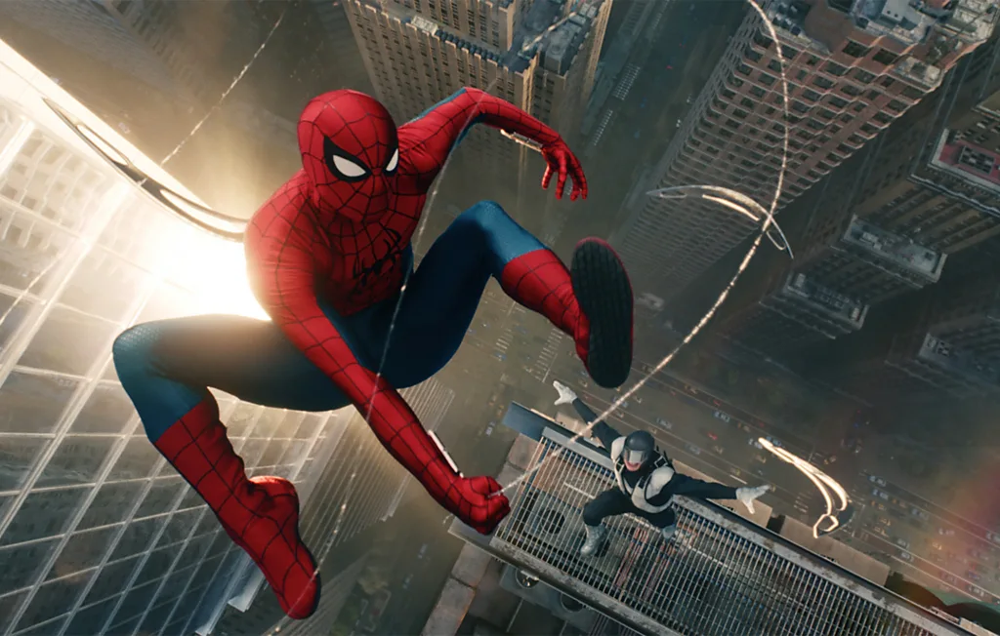

July 2026

This is the fourth Spider-Man film with Tom Holland in the red-and-blue costume, but, as the subtitle suggests, it's also a new start: the first film in a proposed trilogy. It has a new director, with Destin Daniel Cretton (Shang-Chi and the Legend of the Ten Rings) taking over from Jon Watts. And Peter Parker is in a new situation: following a spell cast by Doctor Strange in the last film, none of his friends remember that he exists. It's that time in your mid-20s, when the harsh realities of life can sometimes slap you in the face,
Cretton said in Screenrant. "Peter is dealing with some real grown-up problems both personally and professionally, and for the first time, he's learning how to deal with them completely on his own." If that weren't enough, he's got to deal with the Hulk (Mark Ruffalo), the Punisher (Jon Bernthal), and a gang of ninja assassins. Released on 29 to 31 July internationally.
Read More || Visit Web